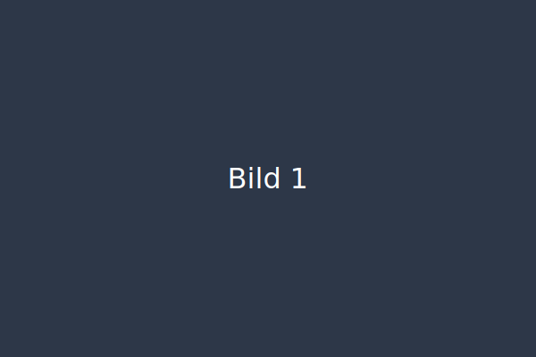

Exklusiv

Darf es mal was anderes sein
Lerne die stille der arktischen Fjorde und die Fotografie der kalten Landschaften kennen.
Lerne die stille der arktischen Fjorde und die Fotografie der kalten Landschaften kennen.
Intensive Praxis: Portrait, Natürlichkeit, Feinzeichnung & Wind. Workshop direkt an der Küste.
Präzise Schärfentiefe erzeugen – Schritt für Schritt Workflow & Software Tools.
Motivwahl, Belichtung & RAW Workflow für Schnee & Nebel – Komposition üben.
Auswahl an Bildern — klick für große Ansicht.